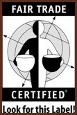

The Coffee Corner

One Cup Can Say it All: Fair Trade and Coffee as a Political Statement
The gourmet coffee industry is booming, and Fair Trade Certified coffee is now the fastest-growing segment of the US specialty coffee market.1, 2
Fair Trade in a Nutshell
Fair trade was initiated in the 1990s after a steep decline in the market price of coffee.1 Out of this decline grew a sweeping political movement aiming to take the middle man out of the global market. This elimination means that farmers of exported crops, namely coffee, exotic fruits, cocoa, tea, sugar and honey, are paid a fair market price for their products. To date, the Fair Trade system has reached over 800,000 farmers who are organized into cooperatives and unions in 48 countries.2 It guarantees these farmers a minimum price of $1.26 for every pound of coffee regardless of the fluctuating market.2 Without Fair Trade, the price of coffee has fallen as low as .25 a pound, less than it costs to grow.1
Why Does Fair Trade Matter?
Because of Fair Trade, farmers and laborers can make a living wage from their work. They're able to accrue profit, and, in turn, reinvest in their communities by improving their farms. As a result, Fair Trade allows farmers to maintain safe labor conditions. practice environmentally sustainable agriculture, and develop business skills necessary for economic competition.1 Esentially, Fair Trade matters because it improves living standards and recognizes basic human rights for farmers around the world.
Why Should You Buy Fair Trade Coffee?
Fair Trade levels the playing field and provides farmers the chance to compete in the global marketplace. It is up to us as consumers to recognize the power our purchases have. When you buy fair trade coffee you help support the livelihood of rural peoples, something global corporations often desecrate. You have the power as a consumer because one cup truly can make a difference.
This video highlights what fair Trade is all about. Watch them to see for yourself how Fair Trade affects coffee growers and their families: http://www.transfairusa.org/content/feature.php
Promote Fair Trade:
Fair Trade is founded on the principles of community. It is a people’s movement, connecting individuals from all parts of the world. Many local coffee shops and stores carry Fair Trade Certified coffee. If none of your local retailers sell Fair Trade, encourage them to get connected. To find out where you can buy Fair Trade locally, or to get involved in the boom, visit http://www.globalexchange.org/campaigns/fairtrade/coffee/retailers.html
Sources:
1. Transfair USA. Fair Trade Certified. 2006. 10 Nov. 2006 <http://www.transfairusa.org>
2. Global Exchange. Fair Trade. 2006. 12 Nov. 2006 <http://www.globalexchange.org>
Last Updated: Monday, 27-Nov-2006 7:11PM
Photo courtesy of <www.transfairusa.org>
Used with permission.
|